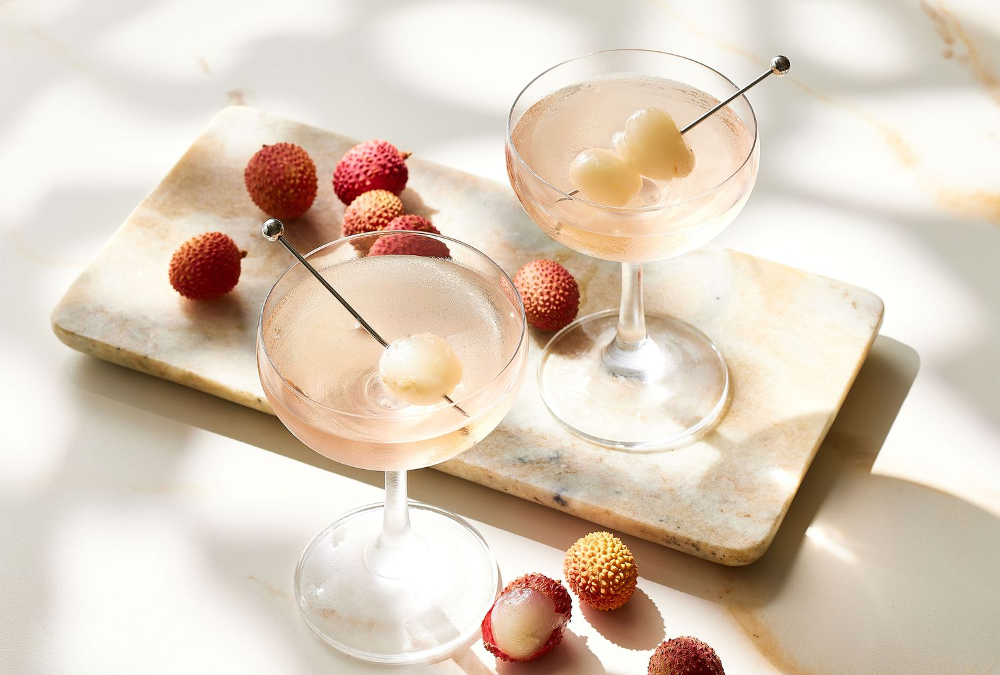

Lychee Martini

If you want a cute drink with an edible fruit, Lychee Martini is the way to go
Ingredients
- 1 1/2 ounces vodka
- 3/4 ounces lychee cordial (such as Giffard's)
- 3/4 ounces Lustau Manzanilla Papirusa
- 1 lychee (for garnish)
Steps
- Add the vodka, lychee cordial, and sherry into a mixing glass with ice and stir until very cold.
- Strain into a chilled Martini glass.
- Garnish with lychee prior to serving.
Home